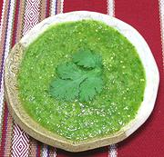

|
Tomatillo Sauce, Semi-CookedMexico - Yucatán - Salsa Verdi | ||||
| Makes: Effort: Sched: DoAhead: |
3 cups ** 45 min Yes |
This is an excellent all purpose sauce, good with just about anything, but especially with tortilla chips. It originated farther north, but has been enthusiastically adopted in Yucatán - see also Comments. | |||
|
1 7 4 5 3 1/2 |
# oz cl oz T t |
Tomatillos (1) Onion Garlic Chili Jalapeño (2) Cilantro Sugar |
Some recipes call for you to char the skins of the chilis and tomatillos and rub them off, but I've found this completely unnecessary if you have a good food processor with a sharp metal blade. On the other hand, it is very easy to do if you have a good Kitchen Torch.
|